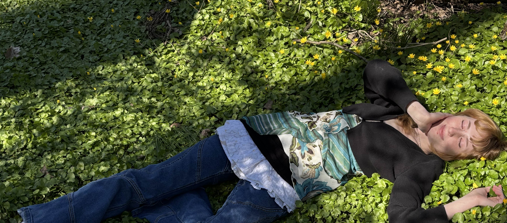
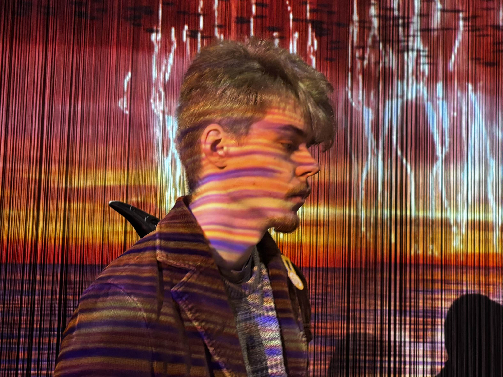
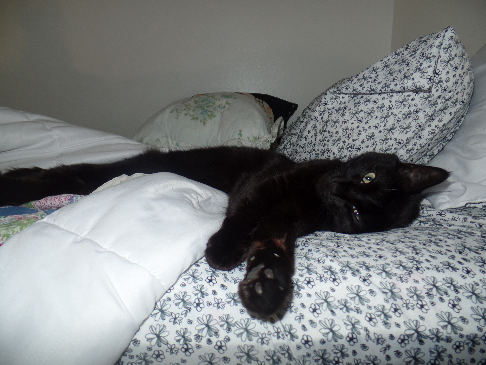

☆ Bio ☆
Hello, my name is Phoebe, and I'm an artist currently based in Indiana. I love working with the integration of traditional media and digital media. Both worlds have a large role in my artistry. While I work with all sorts of media, my inspirations are often pulled from the same sources. Intense emotions, past experiences, significant characters in my life, other influential artists, and the general exposure to an environment weighs heavily on my artist concepts and projects.

☆ Artist Statement ☆
As an artist, I strive to create emotionally invoking pieces that promote an inward observation to the self and the self in context of environment, interpersonal connections, and the world. I create to share, not only with others, but always, and foremost, with myself. Self-discovery is a cycle. Without interpersonal relationships, one cannot truly understand oneself. And without the communication with the self, one cannot truly understand another. My work, while vast in medium, shares a core value of connection and inner development.
Most of my projects I had some sort of outside support, whether it be as simple as encouragement, or active participation in my vision. Thank you to all who have helped me during this course especially. And extra extra thanks to my boyfriend, Garrett, and my cat, Sa-Sa. ♥ ♥ ♥

